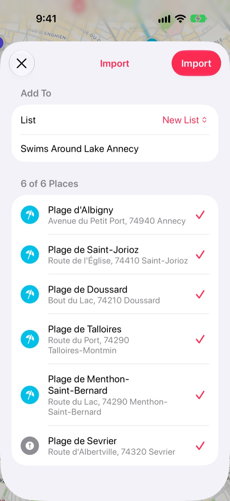

Cómo importar una guía de Mapas de Apple a Stops
Una guía que creaste en Mapas de Apple puede llegar completa a Stops. Cada lugar de la guía se convierte en una parada, en una nueva lista con el nombre de la guía.
- Gratis
- Unos 2 minutos
- iPhone y iPad
Lo que necesitas
- Una guía que hayas creado tú en Mapas de Apple. Las guías de los editores de Mapas de Apple, como las de Guías que nos encantan, solo comparten un enlace a sí mismas y no se pueden importar.
Paso a paso
-
Comparte la guía desde Mapas de Apple
En Mapas, abre Tus guías, toca la guía y luego toca el botón Compartir.
-
Envíala a Stops
En la hoja para compartir, toca Stops. Stops muestra los lugares de la guía, con el nombre de la guía, listos para guardar.
O toca Copiar y abre Stops: aparece el aviso Enlace encontrado en el portapapeles sobre el mapa. Toca Importar.

-
O pega el enlace en Importar
Si tienes el enlace de la guía en un mensaje o una nota, abre Diario con el botón del libro al final de la barra de pestañas y toca el engrane de Configuración. Elige Importar, luego Guía de Mapas de Apple, y pégalo.
-
Revisa los lugares e impórtalos
Desmarca los lugares que no quieras, deja Nueva lista o elige una de tus listas, y toca Importar. La lista se abre en el mapa.

Bueno saber
- Los enlaces cortos, como los de maps.apple, se siguen hasta la guía a la que llevan.
- Importar es gratis. La guía se lee en tu dispositivo; solo los lugares que menciona se buscan en Mapas de Apple.
Más guías
Obtén Stops
Cada lugar donde vale la pena detenerse, en iPhone, iPad, Mac y Apple Watch.